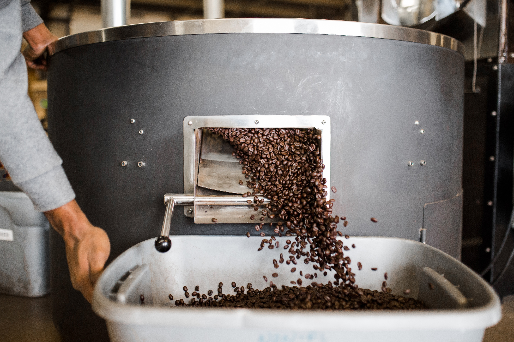

Embracing the bittersweet of coffee
Coffee, like life, is bittersweet. It can be a source of comfort during difficult times and a celebration of joy during moments of triumph. Trying coffee teaches us to embrace the ups and downs, finding beauty and meaning in the contrasting aspects of existence.
Just as coffee's complexities offer a nuanced sensory experience, our own complexity as individuals becomes a source of empowerment. Embracing the bittersweetness of life allows us to cultivate a profound sense of self-awareness and authenticity.
